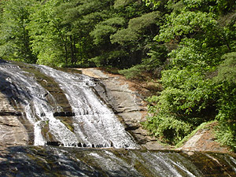
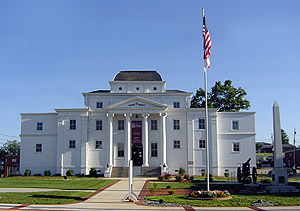
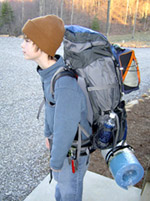
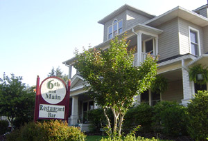
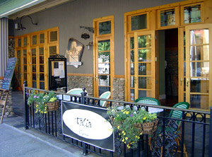

Moravian Falls and Wilkes County Attractions:
| |
|  |
"The falls in Moravian Falls " |
|
| |
|
The Moravian Falls are a must see and are just 2 miles from Hidden Hollow Lane, the road leading to the cottage.
The Kerr Scott Lake designed by the Army Corps of Engineers is only fifteen minutes away and offers biking, hiking, fishing, boating, picnicking, and swimming. The nationally acclaimed Dark Mountain Trails are perfect for the biking enthusiast. The trail includes jumps and winds its way through a beautiful pine forest with awesome views of the mountains and lake throughout.
Wilkes Art Gallery showcases local, regional, and national artists and is a non-profit gallery.
Wilkes County Heritage Museum is an informative way to learn about the early settlers in this area and the history of moonshine and how it led to a beloved national sporting event called NASCAR.
| |
|  |
"Wilkes County Heritage Museum" |
|
| |
|
Attractions within an hour or less
of Moravian Falls:
Stone Mountain State Park provides hiking and rock
climbing with over 13,000 acres of mountain beauty.
(45 minutes)
The Village of Blowing Rock located just 50 minutes away off the Blue Ridge Parkway is a must see for the shopper in your life. Quaint and designed for walking, Blowing Rock is loaded with antique, clothing, and eclectic shops. The restaurants and cafes are of the utmost quality and a delight to the palette.
|  |
"Plenty of Places for Camping and Hiking" |
|
|
|
|
Winston Salem settled by the Moravians back in 1766, still maintains its Moravian heritage through what’s known as the Old Salem Historic district. It is here where you can discover the daily lives of the Moravians back in 1766 as you tour the village as it was over 240 years ago. Make sure you stop by the bakery for authentic Moravian sugar bread and the Love Feast buns!! Mummmmmmm!!!!!!!!!!!!! (45minutes)
Other wonderful attractions in the area include Grandfather Mountain, Boone (Appalachian State University and ski resorts), Hickory (furniture capital), and an array of neighboring vineyards. (Windy Gap Vineyards, Raffaldini Vineyards, Elkin Creek Winery, Rag Apple Lassie and more)
| |
| |
|  |
"6th and Main"
|
| |
|  |
"Talia"
|
|
| |
|
Local Dining:
Outside of the chain restaurants like Ruby Tuesdays, Applebees, Pizza Hut and all the fast food joints located in the town of N. Wilkesboro here are a few of our local favorites:
Brushy Mountain Smokehouse and Creamery:
You will find award winning Barbeque as seen on the Food Channel’s “BBQ with Bobby Flay” Show at Brushy Mountain Smokehouse and Creamery. Need I say more? Great eats for the whole family and the best cream you’ve ever had. So good I dare not put the word ice before it! For directions click here.
6th and Main:
Our finest in dining located in downtown N. Wilkesboro which features a more formal and gourmet dining experience. This is perfect for a romantic date or business gathering.
For directions click here.
Talia Espresso:
A bistro-style coffee house nestled in the heart of downtown Wilkesboro, Talia Espresso features gourmet coffees, espressos, lattes, and desserts with a seasonal menu. Another wonderful coffee shop! Oh did I mention the coffee. Its real……. Good……….!
For directions click here.
|